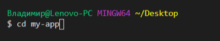

Introduction in React
ReactDOM.render(element, document.getElementById('root'));
Virtual DOM

Component, props
function Welcome(props) {
return Hello, {props.name}
;
}
class Welcome extends React.Component {
render() {
return Hello, {this.props.name}
;
}
}
State
class Car extends React.Component {
constructor(props) {
super(props);
this.state = {brand: "Ford"};
}
render() {
return (
My Car
);
}
}
Quick start

